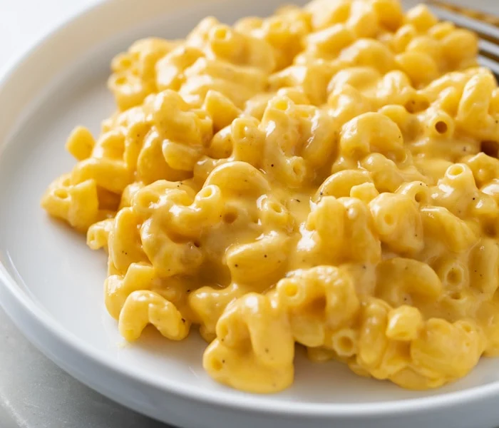

Macaroni and Cheese
This macaroni and cheese recipe requires a large pot, saucepan, box macaroni, butter, flour,
salt, pepper, milk, and shredded cheese for a total cook time of 25 minutes.

Ingredients
- 1 box elbow macaroni
- 0.25 cup butter
- 0.25 cup flour
- 0.5 teaspoon salt
- Pinch of black pepper (to taste)
- 2 cups milk
Steps
- Bring salted water to boil in pot and cook macaroni until cooked but not firm (about 8 minutes).
- While macaroni cooks, melt butter in saucepan over medium heat.
- Add flour, salt, and pepper and stir until smooth (about 5 minutes).
- Pour in milk and continue stirring until mixture is smooth (about 5 minutes).
- Add cheese and stir until melted.
- Drain macaroni and fold into cheese sauce until coated. Enjoy!